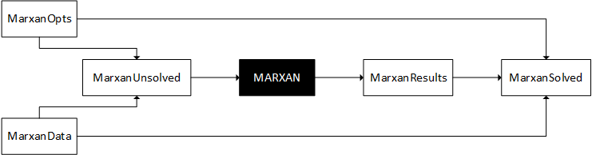
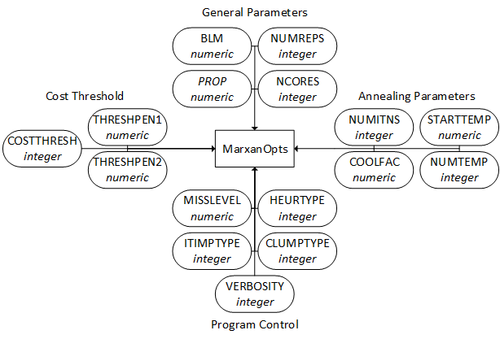
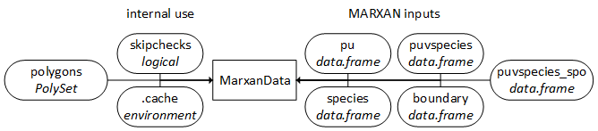
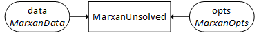
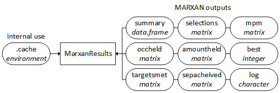
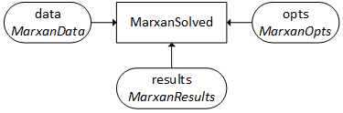

This package relies on five main classes to encapsulate the MARXAN workflow. These are the MarxanOpts, MarxanData, MarxanUnsolved, MarxanResults, and MarxanSolved classes (Figure 1). To fully exploit this R package, users will need to be familiar with each of these classes. Briefly, the MarxanOpts class stores the MARXAN input parameters. The MarxanData class stores MARXAN input data relating to the planning units and species in given scenario. The MarxanUnsolved class combines MarxanOpts and MarxanData objects to represent an unsolved MARXAN problem. The MarxanResults class stores the outputs from MARXAN. The MarxanSolved class combines MarxanOpts, MarxanData, and MarxanResults classes to represent the inputs and outputs from MARXAN. Each of these classes is associated with help a file which can be accessed using the help function, for example help('MarxanOpts-class').

Figure 1. The relationship between the five main Marxan classes. The MarxanOpts and MarxanData objects are used to construct a MarxanUnsolved object. The MarxanUnsolved class is then processed by the MARXAN program to generate outputs for a MarxanResults object. MarxanOpts, MarxanData, and MarxanResults objects are used to build a MarxanSolved object. Open rectangles denote classes, the filled in rectangle denotes the MARXAN program, and the arrows indicate dependencies.
The example data used in this tutorial is processed version of the data used in the “Introduction to MARXAN” course. It can be loaded in R by running the code below:
library(marxan)
data(taspu, tasinvis)
The MarxanOpts class represents the input parameters for MARXAN (Figure 2). This class has slots that correspond to the names of input parameters in the 'input.dat' file, and an additional NCORES slot that refers to the number of processes to use for processing. MarxanOpts objects are used to generate 'input.dat' files for MARXAN. To ensure that MARXAN outputs are compatible with MarxanResults methods, many of the 'Save Files' parameters present in 'input.dat' are hard-coded into the MarxanOpts class.

Figure 2. The structure for the MarxanOpts class. The rectangle denotes the class of interest, and ovals represent slots. The normal text in each oval indicates the name of the slot, and the text in italics indicates the class for the object in the slot. Arrows indicate dependencies.
New MarxanOpts objects can be created in R by using the MarxanOpts function, or by using the read.MarxanOpts function to read an 'input.dat' file.
# create new MarxanOpts object, with default parameters except BLM and NUMITNS
# note that NUMITNS is an integer and must be set using a number followed with an 'L'
mopts1<-MarxanOpts(BLM=100, NUMITNS=10L)
# write to disk to a temporary directory
write.MarxanOpts(mopts1, tempdir())
# show the resulting input.dat file
input.dat.path<-file.path(tempdir(), 'input.dat')
cat(paste(readLines(input.dat.path), collapse="\n"),"\n")
# create new Marxanopts object by loading parameters from the input.dat
mopts2<-read.MarxanOpts(input.dat.path)
Once created, the parameters stored in a MarxanOpts object can be viewed.
# show all parameters and their values
str(mopts1)
str(mopts2)
# show BLM parameter with @ operator
# the @ operator is conceptually similar to the $ operator,
# but used for S4 classes and not S3 classes.
mopts1@BLM
# show PROP parameter with the slot function
slot(mopts1, 'PROP')
The parameters stored in an existing MarxanOpts object can be changed. This can be acheived using the @ operator, slot function, or the update method. The update methods for Marxan classes are designed to conceptually similar to the update methods for statistical models (eg. update.default).
# change BLM parameter with @ operator and show it
mopts1@BLM
mopts1@BLM<-500
mopts1@BLM
# change HEURTYPE parameter with slot operator
mopts1@HEURTYPE
slot(mopts1, 'HEURTYPE')<-5L
mopts1@HEURTYPE
# copy parameters in mopts1,
# change the NUMREPS, NUMITNS, and NUMTEMP
# store results in mopts3
mopts1@NCORES
mopts1@PROP
mopts3<-update(mopts1, ~opt(NUMREPS=10L, NUMREPS=10L, NUMTEMP=5L))
mopts1@NCORES
mopts3@NCORES
mopts1@PROP
mopts3@PROP
The MarxanData class stores the input planning unit and species data for MARXAN scenarios (Figure 3). The main slots for this class are data.frame objects that correspond to a specific MARXAN input data file. The species slot corresponds to 'spec.dat', the pu slot corresponds to 'pu.dat', the puvspecies slot corresponds to 'puvspr2.dat', the puvspecies_spo slot corresponds to 'puvspr2.dat' sorted by species id (an undocumented feature in Marxan used to speed up pre-processing), and the boundary slot corresponds to 'bound.dat'. The remaining slots, .cache, skipchecks, and polygons are used internally in R. The .cache slot is an environment used to store processed data. The skipchecks slot is a logical value indicating if data integrity checks should be run. By default this is FALSE to ensure valid data is stored in a MarxanData object; however, this can be disabled to reduce pre-proccessing time. The polygons slot contains spatially explicit data for the planning units.

Figure 3. The structure for the MarxanData class. Conventions are detailed in Figure 2.
New MarxanData objects can be created by supplying pre-processed data to the MarxanData function, supplying raw data to the format.MarxanData function, or by reading MARXAN input data from files with the read.MarxanData function.
## create MarxanData object from pre-processed data
# make pre-processed data
pu.dat<-taspu@data
spec.dat<-data.frame(id=seq_len(nlayers(tasinvis)),spf=1,target=100)
puvspr.dat<-calcPuVsSpeciesData(taspu, tasinvis)
bound.dat<-calcBoundaryData(taspu)
polyset<-SpatialPolygons2PolySet(taspu)
# make MarxanData object
mdata1<-MarxanData(pu=pu.dat, species=spec.dat, puvspecies=puvspr.dat, boundary=bound.dat, polygons=polyset)
## create MarxanData object from raw data
# format.MarxanData is basically a wrapper for code shown above
mdata2<-format.MarxanData(taspu, tasinvis, targets=100, spf=1)
## create MarxanData object from data marxan files
# write mdata1 to temporary folder
write.MarxanData(mdata1, tempdir())
# create new MarxanData object
mdata3<-read.MarxanData(tempdir())
## show structure of MarxanData object
str(mdata3)
Data in existing MarxanData objects can be viewed and changed using the @ operator and several functions. While only functions to get and set species penalty factors and targets are shown below, functions exist to get and set all fields in the 'pu.dat' and 'spec.dat' tables. Be aware, that the set functions shown below, eg. targets(...)<-value and spfs(...)<-value, are syntactic sugar: they are easy to use but also inefficient. Generally, users are encouraged to use the update method.
# show first 20 rows of species data
head(mdata1@species)
head(slot(mdata1, 'species'))
# show species targets
mdata1@species$target
slot(mdata1, 'species')$target
targets(mdata1)
# change species spfs to 5
mdata1@species$spf<-5
slot(mdata1, 'species')$spf=5
spfs(mdata1)<-5
# copy data in mdata1,
# change target for species 1 to 10,
# store new MarxanData object in mdata2
mdata2<-update(mdata1, ~spp(1, target=10))
The MarxanUnsolved class stores the input parameters and data for MARXAN (Figure 4). It has two slots: an opts slot containing a MarxanOpts object and a data slot containing a MarxanData object.

Figure 4. The structure for the MarxanUnsolved class. Conventions are detailed in Figure 2.
New MarxanUnsolved objects can be created by supplying MarxanOpts and MarxanData objects to the MarxanUnsolved function, reading MARXAN input parameters and data from files using read.MarxanUnsolved, or using the marxan function with argument solve=FALSE.
## create new MarxanUnsolved object using existing objects
mu1<-MarxanUnsolved(mopts3, mdata1)
## create new MarxanUnsolved object by reading parameters and data from files
# write data to file
write.MarxanUnsolved(mu1, tempdir())
# read data from file and store in new object
input.dat.path<-file.path(tempdir(), 'input.dat')
mu2<-read.MarxanUnsolved(input.dat.path)
## create new MarxanUnsvoled object by processing raw data
mu3<-marxan(taspu, tasinvis, targets='50%', solve=FALSE)
## show structure of MarxanUnsolved object
str(mu3)
Similar to the MarxanOpts and MarxanData classes, the update function can be used to change the Marxan input data and parameters for MarxanUnsolved objects.
# copy the data in mu3,
# then change the HEURTYPE parameter to 4,
# change the CLUMPTYPE parameter to 1,
# change the target for species 1 to 2,
# change the cost for planning unit 4 to 10,
# and store data in mu4
mu4<-update(mu3, ~opt(HEURTYPE=4L, CLUMPTYPE=1L) + spp(1, target=2) + pu(4, cost=10), solve=FALSE)
The MarxanResults class stores all the outputs from MARXAN (Figure 5). The summary slot contains the 'output_sum.csv', the selections slot contains the 'output_solutionsmatrix.csv', the log slot contains the 'output_log.dat', and the best slot contains index of the best solution. The amountheld, occheld, mpm, sepacheived, and targetsmet slots contain data from fields in all the 'output_mv*.dat' files merged into matrix objects. Each row in these matrices refers to different solution; each column refers to a different species.

Figure 5. The structure for the MarxanResults class. Conventions are detailed in Figure 2.
New MarxanResults objects can created by reading MARXAN outputs from files using the read.MarxanResults function. The code below is provided only for instructive purposes. For real problems, users are encouraged to use the solve and marxan functions.
## create MarxanResults object
# save MarxanUnsolved object to temporary directory
write.MarxanUnsolved(mu1, tempdir())
# find correct MARXAN program file and store it in options()$marxanExecutablePath
findMarxanExecutablePath()
# copy the MARXAN program file to the temporary directory
file.copy(options()$marxanExecutablePath, file.path(tempdir(), basename(options()$marxanExecutablePath)))
# run MARXAN
system(paste0('"',file.path(tempdir(), basename(options()$marxanExecutablePath)),
'" "',file.path(tempdir(), 'input.dat'),'"'))
# reading MARXAN outputs and store then in a new MarxanResults object
mr1<-read.MarxanResults(tempdir())
## show structure for MarxanResults object
str(mr1)
Data stored in a MarxanResults object can be accessed using the @ operator, the slot function, and using various get methods. The code below uses the selections method to access data stored in this slot, similar methods exist for the occheld, accountheld, mpm, sepacheived, and targetsheld slot.
# show summary data
mr1@summary
slot(mr1, 'summary')
summary(mr1)
# show index for best solution
mr1@best
slot(mr1, 'best')
# show log information
mr1@log
slot(mr1, 'log')
log(mr1)
# access selections in all solutions
mr1@selections
slot(mr1, 'selections')
selections(mr1)
# access selections for best solution
mr1@selections[mr1@best,]
slot(mr1, 'selections')[mr1@best,]
selections(mr1, 0)
# access selections for third solution
mr1@selections[3,]
slot(mr1, 'selections')[3,]
selections(mr1, 3)
The MarxanSolved class stores MARXAN input parameters, data, and outputs. This is the main class that users will interact with. It has a opts slot that contains a MarxanOpts object, a data slot that contains a MarxanData object, and a results slot that contains a MarxanResults object.

Figure 6. The structure for the MarxanSolved class. Conventions are detailed in Figure 2.
New MarxanSolved objects can be created by using the marxan function, solving a MarxanUnsolved and MarxanSolved objects with the solve method, or updating existing MarxanUnsolved and MarxanSolved objects with the update method.
# generate a MarxanSolved object using the marxan function
ms1<-marxan(taspu, tasinvis, targets='50%', NUMREPS=10L, NUMREPS=10L, NUMTEMP=5L)
# solve a MarxanUnsolved object
ms2<-solve(mu1)
# re-solve a MarxanSolved object
ms3<-solve(ms1, force_reset=TRUE)
# update MarxanUnsolved object
ms4<-update(mu1, ~opt(HEURTYPE=2L) + spp(1, spf=5) + pu(4, cost=100))
# update MarxanSolved object
ms5<-update(ms4, ~opt(HEURTYPE=2L) + spp(1, spf=5) + pu(4, cost=100))
The data stored in the MarxanSolved object can be accessed using methods describe for the MarxanOpts, MarxanData, and MarxanUnsolved classes. For example, the selections method can be used to access the selections for solutions stored in the MarxanResults object in the results slot stored in a MarxanSolved object.